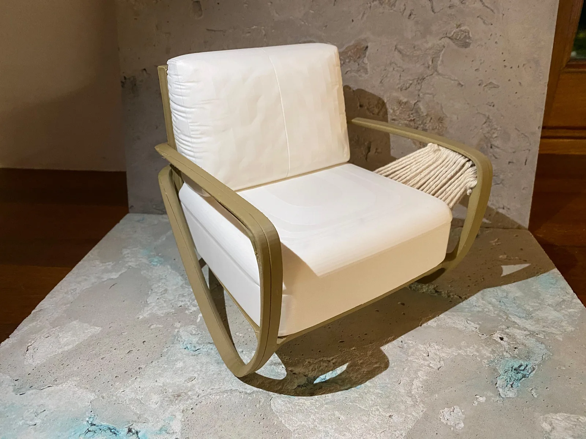
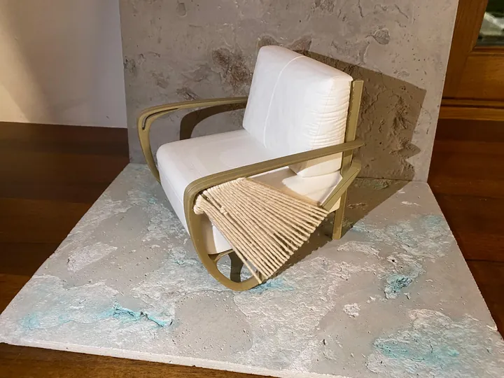
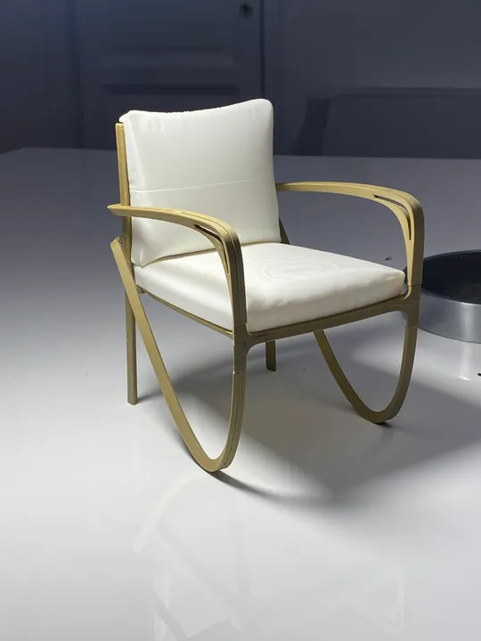
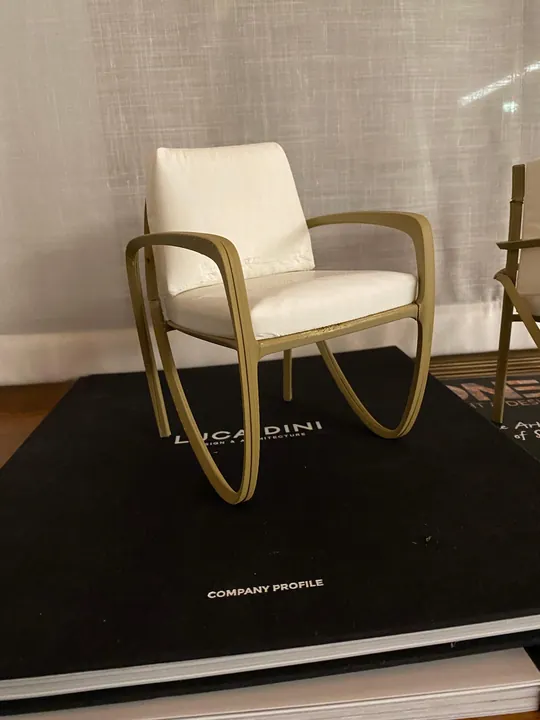
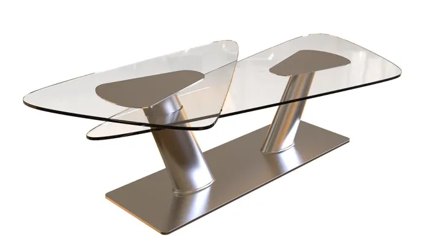
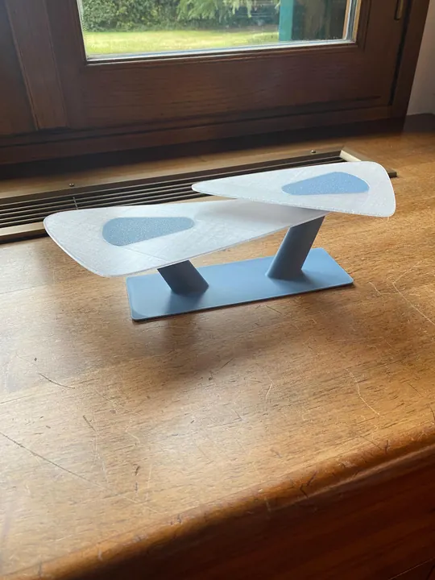
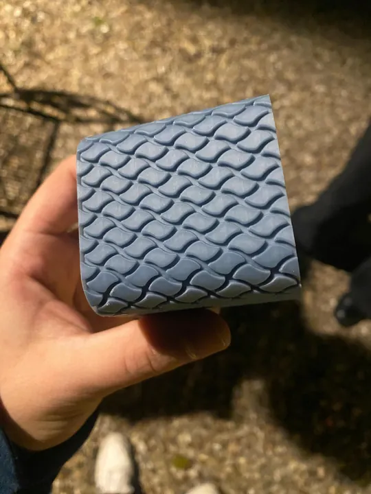
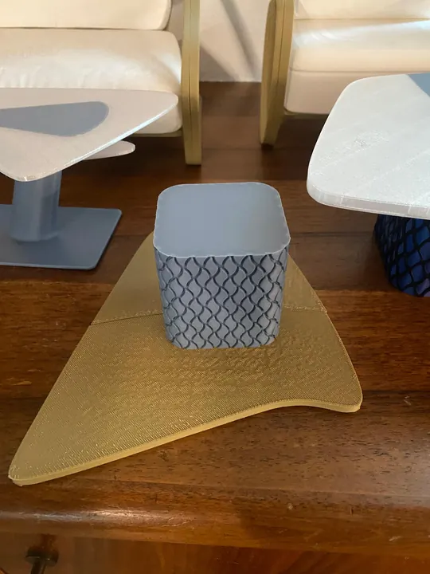

Bentley Outdoor Furniture
Una linea di arredi da esterni per Bentley, ispirata al mondo della nautica e sviluppata attraverso modellazione 3D e prototipi in scala.
Modellazione 3D e prototipazione in scala durante il tirocinio presso Luca Dini Design & Architecture.

- Studio
- Luca Dini Design & Architecture
- Ambito
- Outdoor furniture
- Attività
- Modellazione 3D e prototipazione
- Dove / quando
- DA AGGIUNGERE
Dal mondo della nautica all’arredo outdoor.
Durante il mio tirocinio presso Luca Dini Design & Architecture ho partecipato allo sviluppo di una nuova linea di arredi da esterni per Bentley. Le forme richiamano il mondo della nautica e ne reinterpretano dettagli e proporzioni nel rispetto dell’identità del marchio.
Ho sviluppato i modelli 3D della serie, preparandoli per la stampa 3D. La realizzazione dei prototipi in scala ha permesso di valutare e affinare il design, migliorando la stabilità e l’ergonomia delle sedute.
Una proposta personale
Ho sviluppato ulteriormente la proposta con una variante semplificata della sedia da esterni e un coffee table in acciaio inossidabile e vetro, ispirato alle forme della bitta nautica.
Dal concept al prototipo in scala.
Identità, modellazione e prototipazione: tre fasi per verificare e affinare la linea.
- 01
Tradurre l’identità Bentley
Richiamare il mondo della nautica attraverso forme e dettagli coerenti con l’identità del marchio.
- 02
Sviluppare i modelli 3D
Modellare la serie di arredi e preparare le geometrie per la stampa 3D.
- 03
Prototipare e affinare
Realizzare i prototipi in scala per valutare il design e migliorare stabilità ed ergonomia delle sedute.
Il progetto, da vicino.
Viste d’insieme e dettagli.
Seleziona un’immagine per ingrandirla.
{kind=link}

{kind=link}

{kind=link}

{kind=link}

{kind=link}

{kind=link}

{kind=link}

Hai un’idea da sviluppare?
Ogni progetto inizia da una conversazione.